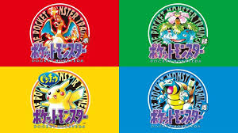

Pokémon, abreviação de Pocket Monsters, é uma famosa franquia da Nintendo. O universo abrange jogos de videogame, cartas colecionáveis (Pokémon TCG), e jogos mobile, como o popular Pokémon GO. Pokémon é uma franquia de mídia japonesa composta por jogos eletrônicos, séries de anime e filmes, um jogo de cartas colecionáveis e outras mídias relacionadas. A franquia se passa em um universo compartilhado no qual humanos coexistem com criaturas conhecidas pelo nome de Pokémon, uma grande variedade de espécies dotadas de poderes especiais. O público-alvo principal da franquia são crianças de 5 a 12 anos, mas sabe-se que atrai pessoas de todas as idades. Estima-se que Pokémon seja a franquia de mídia de maior faturamento do mundo e uma das franquias de jogos eletrônicos mais vendidas. Pokémon é uma das franquias de videogames mais populares do mundo, criada pela empresa japonesa Nintendo em parceria com a Game Freak. O primeiro jogo foi lançado em 1996 para o console Game Boy e tinha como objetivo capturar, treinar e batalhar com criaturas chamadas Pokémon.
A primeira geração de Pokémon foi composta pelos jogos Pokémon Red, Green (lançado apenas no Japão), Blue e, posteriormente, Yellow. Nesses jogos, os jogadores assumiam o papel de um jovem treinador que explorava a região de Kanto em busca de se tornar o Campeão Pokémon. Durante a aventura, era possível capturar, treinar e batalhar com os 151 Pokémon originais, formando equipes para enfrentar líderes de ginásio e a poderosa Elite dos Quatro. Essa geração apresentou personagens icônicos que se tornaram símbolos da franquia, como Pikachu, Charmander, Bulbasaur e Squirtle. O enorme sucesso desses jogos deu origem a uma das maiores franquias de entretenimento do mundo, inspirando séries animadas, filmes, cartas colecionáveis e diversos outros produtos.
